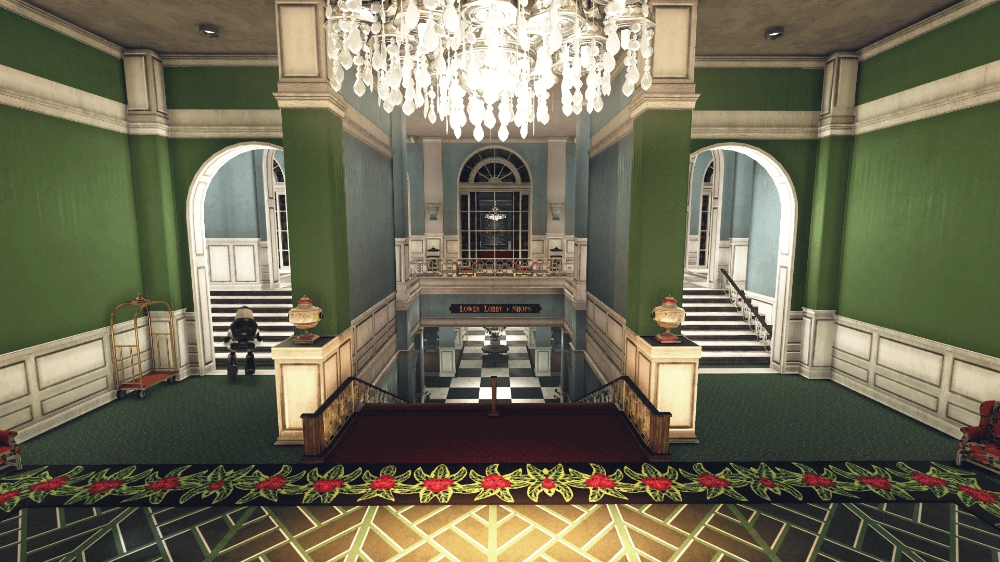
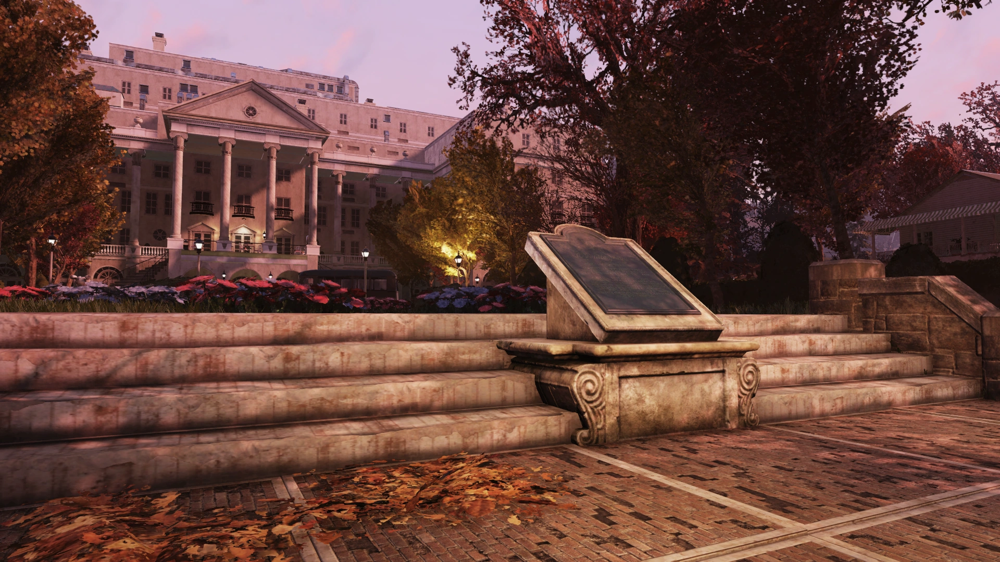
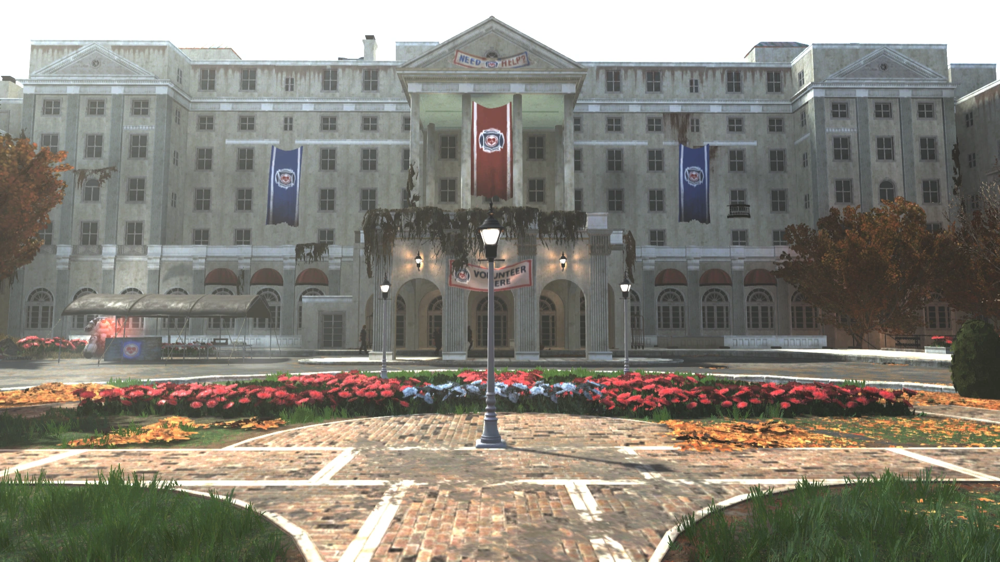
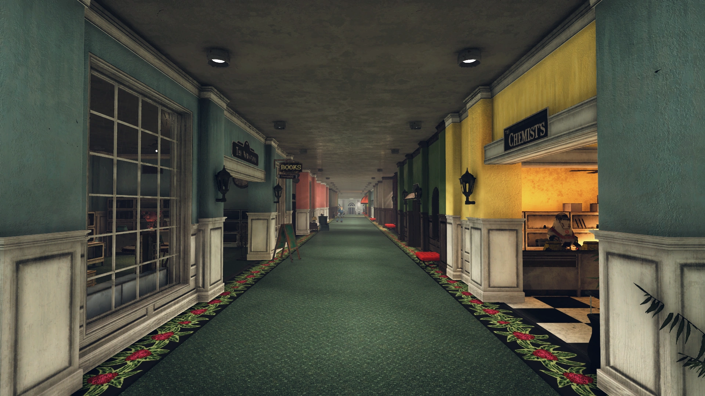
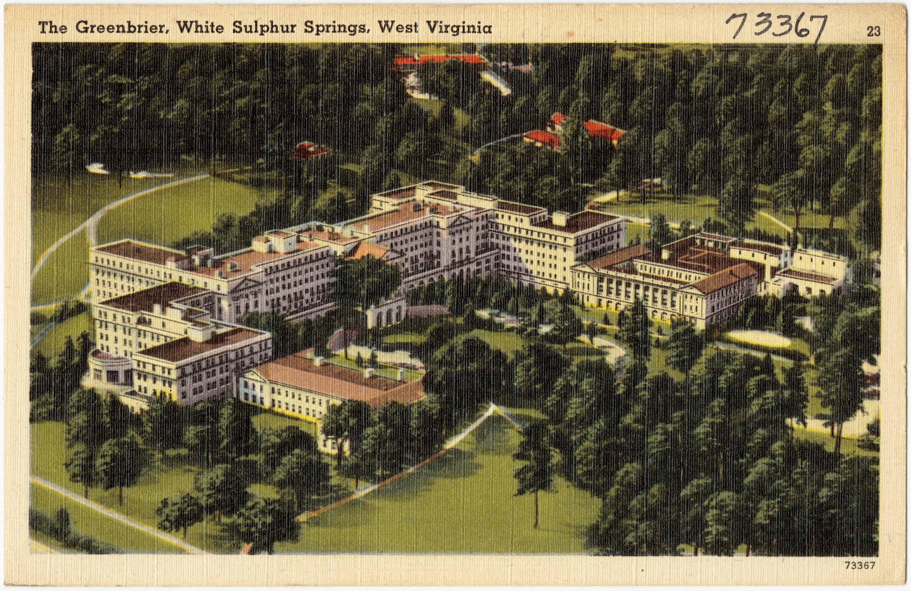
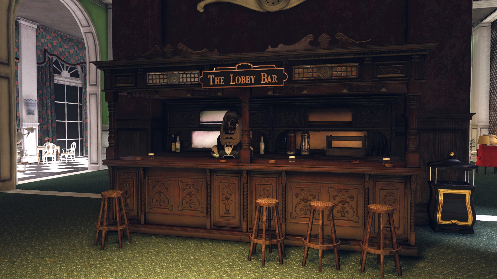
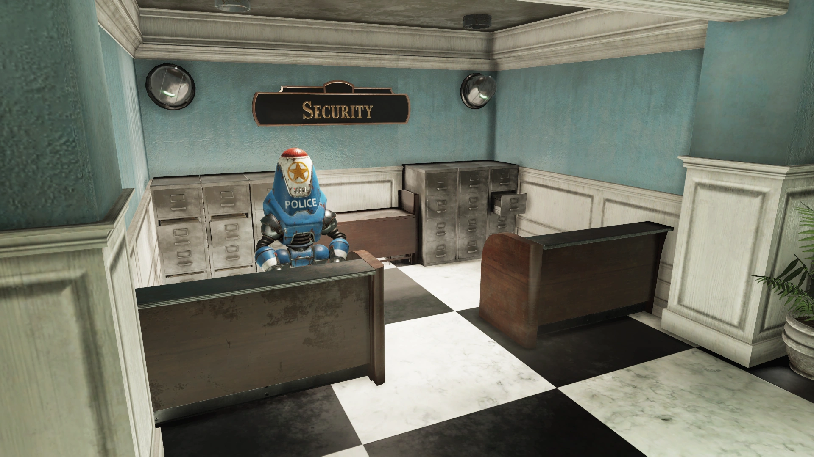

The Whitespring
ホワイトスプリング
概要
ホワイトスプリングは、アパラチアの森林地帯に位置する広大な高級リゾート施設の総称です。
ホワイトスプリング・リゾート（ホテル本館）、ホワイトスプリング敷地（ゴルフコースや付帯施設）、そしてホワイトスプリング・バンカー（地下施設）で構成されています。
背景
1858年に建設され、敷地内の天然硫黄泉「ホワイト・サルファー・スプリングス」にちなんで名付けられました。
ホワイトスプリングはその南部スタイルで有名で、連邦政府との歴史的な結びつきを持ち、2077年までに31人の現職アメリカ大統領がゲストとして訪れています。うち12人はホワイトスプリング大統領コテージ・博物館に宿泊しました。

財政危機と2080イニシアチブ
大戦前、ホワイトスプリングは深刻な財政難に陥っていました。
2065年頃には利益が出なくなり、運営資金と改装ローンのために周辺の土地の多くを売却せざるを得なくなりました。
こうした中、2075年5月27日に「2080イニシアチブ」が発表されました。
これは5年間にわたる大規模改装計画で、以下の4つのプロジェクトを含んでいました:
- 🏠 ホームステッズ — 敷地内への高級住宅分譲
- ⛳ スプリングヒル — ゴルフコースの改修
- 🤖 アイアンクラッド・サービス — ロボットによるスタッフ置き換え
- 🏛️ モダン・ヘリテージ — 施設の近代化・改装
しかし、ホームステッズは100区画中5区画しか売れず、財政面のテコ入れは大失敗に終わりました。
マネージャーのジェームズ・ウィルコックスと取締役会は、即座の崩壊を避けるため投資家への報告を隠蔽しました。
アイアンクラッド・サービスの惨事
2077年7月、残りの警備・造園スタッフがアイアンクラッドのロボットに置き換えられ、数ヶ月かけてホテル全体のスタッフが機械化されました。
従業員は自分の後任であるロボットの訓練を手伝うことを求められました。
この措置はPR上の悪夢となりました。チャールストン・ヘラルド紙はリゾートの経営陣を「ロボットに頼る大企業の象徴」として批判。
去った従業員の多くは借金を抱え、残ったわずかな者もロボットの故障を喜ぶ（延長雇用の口実になるため）という有様でした。
10月までに、軍用グレードのロボットをサービス業に転用した結果は惨憺たるものでした:
- 🤖 アサルトロンのマッサージ師 — 繊細な圧力センサーがなく、脊椎損傷を連発
- 🧳 ベルボーイロボット — 1週間でスーツケース24個を紛失
- 🍳 ロボットシェフ — キッチンで火災を起こす
- 🍫 キャンディショップのロボット — ダークチョコレートで店を水没させる
スプリングヒル改修の失敗
9月になると、スプリングヒル・ゴルフコースの改修プロジェクトも破綻しました。
CEOのウィルバー・エインズリー3世は、経験のない息子ライアン・エインズリー（核エンジニア出身）を「主任建築家」に任命しました。
プロジェクトはすぐに暴走し、予算超過、工期遅延、品質低下に陥りました。
ウィルコックスがライアンの解雇を求めると、CEO から逆に「お前がクビになるぞ」と脅されました。

エンクレイヴ・バンカー
ホワイトスプリングの財政難は、トーマス・エッカートの思惑にとって好都合でした。
彼はリゾート地下にホワイトスプリング・バンカーの建設を資金援助し、エンクレイヴのメンバーが使用する大規模な自動化シェルターを構築しました。
ホテルのコンピュータネットワークはMODUSに接続され、すべてのターミナルは隔離されました。
配管は封印・隠蔽され、技術仕様書は偽造されてバンカーへの接続は秘匿されました。
ホワイトスプリングが選ばれた理由は:
- 🏔️ 山岳地帯と卓越風による核降下物の最小化
- 🤖 ロボットによる常時監視体制
- 🏭 バンカーの完全自動製造・組立システム（損失ロボットの即時補充が可能）
- 💰 債務を抱えるホテルには到底手が出ない最先端技術
大戦
大戦が始まったとき、スタッフとゲストのほとんどがリゾートから逃げ出しました。
残ったのはスタッフ4名、ゲスト92名、そして約500体のロボットでした。
キャンディショップのカウンターにいた事務員ジョイス・イーストンが、残りのスタッフから指揮を執るよう選ばれました。
翌日、ルー・パーメストがロボットを再プログラムし、彼女をアシスタント・マネージャーとして認識させました。
ジョイスの指揮の下:
- ホテルを封鎖し、放射線が落ち着くまで出入りを禁止
- 物資の在庫管理を実施 — わずかな人数のため食料は10年分あった
- ロボットを戦闘用に再装備
- 2078年夏、廃車やコテージからの資源回収チームを派遣
- 難民が現れたが、承認した者のみ受け入れる方針を貫いた
冬の終わりと追放
2078年12月、ジョイスの楽観は尽きました。
「モダン・ヘリテージ」改装がロボットのルーティンに深く組み込まれており、2079年1月1日に改装が自動的に開始される予定でした。
ゲストとスタッフは部屋から締め出され、必須アップデートにより「不法占拠者」として追い出されることになります——建築検査官が到着するまでは。検査官が来る見込みがないことは誰もが知っていました。
スタッフとゲストは出発の準備を始めました:
- アーティザンズ・コーナーでサバイバル講習
- パッティンググリーンで射撃・護身術のレッスン
- 大晦日のガラパーティーで残りの備蓄を全員に分配
一部の生存者はゴルフクラブでロボットを制圧しようとし、残りは逃げ出しました。
ポーラとジョイスはチャールストンへのキャラバンを率い、ルーと仲間たちはゴルフクラブのロボットと賭けに出ました。
その他の者はサニートップ・スキーレーンやプレザントバレーのリゾートを目指しました。
ホワイトスプリングはロボットの管理下で放棄され、2086年5月30日に「O.R.」というイニシャルの人物がロックダウンを解除し、公共施設をウェイストランドに開放するまで、何年もの間閉ざされたままでした。

ホワイトスプリング避難所
その後、アパラチアに人々が再定住し始めると、レスポンダーの再建を目指すグループが本部をホワイトスプリングに設立しました。
リゾート本館を引き継いだこのプロジェクトは「ホワイトスプリング避難所」として知られるようになりました。
ザ・ピットを含む荒れ地中から難民が集まり、レスポンダーによって多くの新しい設備が整えられています。
レイアウト
ホワイトスプリングはそれ自体が一つの広大なエリアです。
フェンスとゴルフコースに囲まれ、ロボットの軍団がパトロールしています。
リゾート本体はロボットスタッフによってほぼ完璧な状態に維持されており、その美しさは際立っています。

舞台裏 — 実在のモデル「ザ・グリーンブライアー」
ホワイトスプリングのモデルとなったのは、ウェストバージニア州ホワイト・サルファー・スプリングスにある実在の高級リゾート「ザ・グリーンブライアー」（The Greenbrier）です。

ザ・グリーンブライアーは1778年から続く歴史を持ち、アレゲーニー山脈に位置する全米有数のリゾートホテルです。
天然の鉱泉の治療効果を求めて政治家や富裕層が集まり、マーティン・ヴァン・ビューレンやジョン・タイラーなど複数の大統領が宿泊しました。
1858年には「グランド・セントラル・ホテル」（通称「オールド・ホワイト」）が建設されています。
南北戦争中は病院・軍事司令部として使用され、第二次世界大戦中には日本・ドイツ・イタリアの外交官の抑留施設、さらにアシュフォード総合病院として24,000人以上の兵士を治療しました。
最もゲームとの関連が深いのは、1959〜1962年に秘密裏に建設された「プロジェクト・グリーク・アイランド」です。
これはホテル地下に核攻撃時に米国議会を収容するための緊急移転センターで、30年間秘密のまま維持され、1992年に機密解除されました。
この地下バンカーの実話が、ゲーム内のエンクレイヴ・バンカーの直接的なインスピレーションとなっています。
2009年にはウェストバージニア州の実業家ジム・ジャスティス（後の州知事）が買収し、カジノやPGAツアーイベントなどを導入して復活を遂げました。
現在も国定歴史建造物に指定されている名門リゾートです。
登場作品
ホワイトスプリングはFallout 76にのみ登場します。
ギャラリー


キャンディショップの事務員が、世界の終末にリゾートの指揮を取る——Fallout 76で最も印象的なリーダーシップの物語の一つです。
ジョイス・イーストンの冷静な判断力——ホテルの封鎖、ロボットの掌握、厳格な入場管理——は、Vault監督官と同等の采配です。
そして「最高級リゾートに閉じ込められるのは最悪の運命ではない」という一節の苦いユーモアも、Falloutらしさに溢れています。
実在のグリーンブライアーと核シェルター「プロジェクト・グリーク・アイランド」の実話を知ると、ホワイトスプリング・バンカーの設定がいかに現実に根ざしているかが分かります。
フィクションと現実が最も美しく重なり合う場所、それがホワイトスプリングです。
This article was created by translating and editing The Whitespring from Nukapedia: The Fallout Wiki.
Licensed under the Creative Commons Attribution-Share Alike License (CC BY-SA 3.0).
The photo of The Greenbrier is in the public domain.
コミュニティ維持のため、寄付を受け付けております。
> COMMENTS